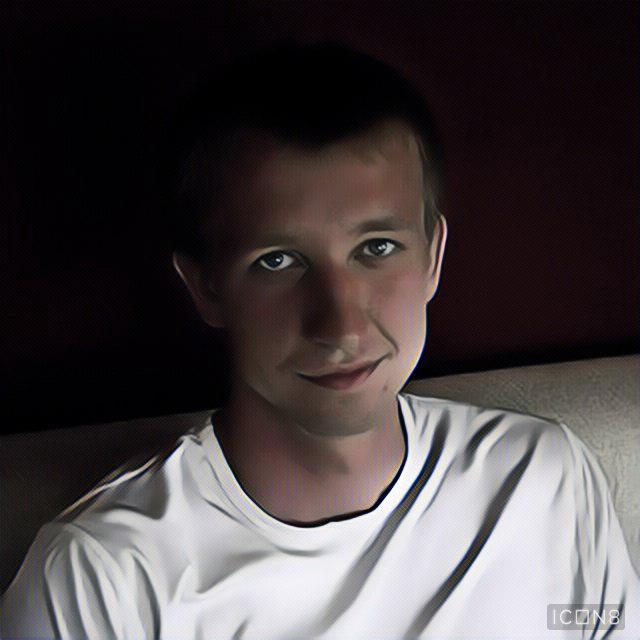
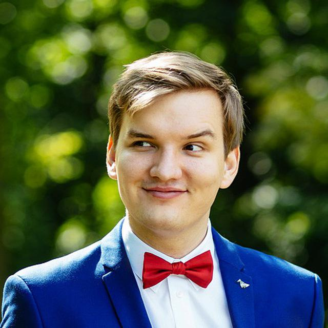
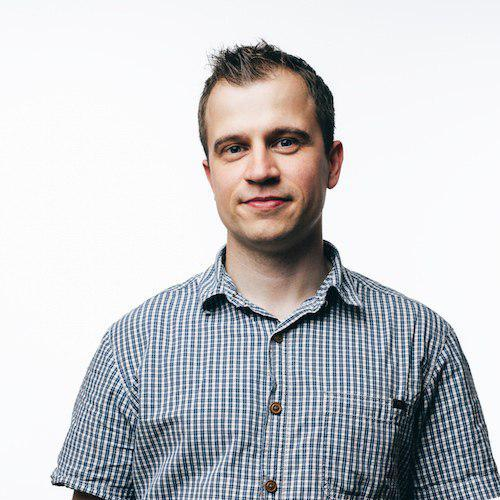
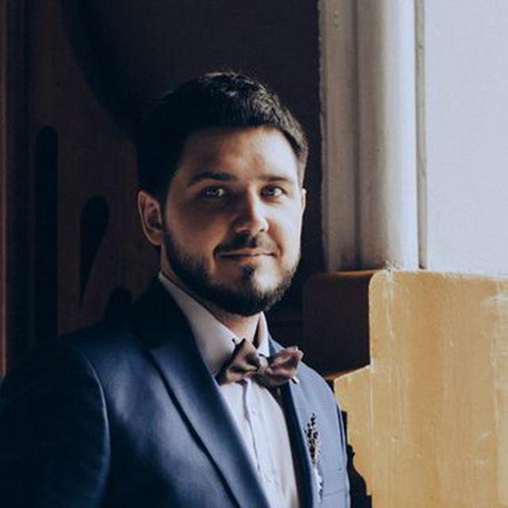

Fondu ICO
Interactive White Paper [English, Russian, Chinese]
Author: Nikita Kolmogorov
Introduction
This paper is a proposal to the whole crypto and open source community that potentially can save millions of dollars and provide the opportunities for highly valuable yet underrated startups and companies to emerge. ICO market is sick and we have to fix it: swamped with parasites that leach on the industry providing the visionaries with highly overpriced hopes.
As we all know — most of the things in IT can be made more efficient my making it automatic. So why is the ICO market any different? We propose solutions that will allow our community to create semi-automatic open source service to create and manage any types of ICO. With minimal steps users will be able to fill in their ICO profile, configure the smart-contract with a series of simple questions and start raising money with a marketing-ready website.
If you have ever tried to conduct or conducted an ICO you know that writing a smart contract can be as costly as $10,000 to $75,000 and creating a marketing website can be priced from $30,000 to $70,000 — however, after you spend all this money you are left with a generic website and a slightly modified ERC20 token smart-contract. Why can't it be done automatic?
Product
Solution that we propose consists of three simple modules: ICO constructor, ICO presenter and Investor Personal Profile. Let us explain each of them.
- ICO constructor — simple webpage with forms that you fill with the ICO information like token name, team details, product description, logo, screenshots, social network contacts, legal details, whitepapper, roadmap, etc. Smart-contract constructor is a part of this module that allows you to fill simple forms, answer a series of multiple-choice questions and get a smart-contract deployed to the ETH and/or EOS blockchain.
- ICO presenter — after constructing the ICO with the previous tool you will get a personalized profile page that can act as the main website for the ICO and can contain all the necessary information for the investors including live ICO progress (we'll fetch the smart-contract state in the real time), important milestones and the contract address. Everything is hosted on Fondu platform and has zero costs assosiated with keeping it up.
- Investor Personal Profile — one of the most difficult to implement and one of the most expensive things in any ICO. This is the part that allows potential investors to pre-register for the sale and seek for approval — as well as a perfect tool to provide KYC and whitelisting functionality to the ICO conductors. We intend to make this module a part of the initial release — as it will allow to drastically decrease the costs associated with ICO and improve investors' user experience.
But the main goal of our project is to bring ICO concept back down to the usual people, so that anybody can use smart-contracts to conduct any type of the crowdfunding. Whether it is something happy — like funding wedding with the help of guests (instead of them buying presents), or rather unfortunate — like funding a necessary complex medical operations for the ones in need. Everybody should be able to launch ICO without headache and large capital investment.
In case you wonder how difficult it is to build things that we aim at, look at what I've wrote in 5 minutes while drinking my morning coffee:
{{ title || titleSample }}
{{ description || descriptionSample }}
Team:
{{ team || teamSample }}
Legal:
{{ legal || legalSample }}
It wasn't difficult to setup your first ICO profile, was it? Maybe, it will be harder to create a smart-contract constructor? Let's see, I've got 5 more minutes to spare:
{{code}}What's next?
- Run
./deploy.shin the root folder of the zip you've downloaded - Follow the steps of the deployer
- Enjoy your smart-contract deployed!
Nice! You've just written your first smart contract! $70,000 they say — and you just did it for free! Obviously, it's just a simple demo of ERC20 tokens without the crucial part — ICO token distribution, but believe me — it is as simple as the example above. Most of the ICO's just get copy\paste generic code with names of tokens, owner ETH addresses and supply amount changed. ICO visionaries literally get robbed in the broad daylight — and we just want to help stop it.
So far, I guess, you've learnt about our mission and what we are trying to implement. Simple ICO constructor, ICO presenter and Investor Personal Space — serivce where launching ICO will not take more than 15 minutes of configuration process. Obviously, to achieve such a goal we need an experienced team of developers and contributors. So who's behind the whole Fondu thing?
Team
Nikita Kolmogorov [TG, FB]
Creator of @voicybot (1,500,000 users, open source), @banofbot (150,000 chats, open source), Toreador.io (over $1,000,000 of trading capital), @golden_borodutch — Telegram channel with over 12,000 subscribers with the focus on cryptocurrencies, IT and self-development. One of the main contributors to @arbeit_bot (open source).
Started to code at the age of 12 he has participated in 35+ projects as a developer, IT enthusiast, manager, lead and consultant. His main focus at the moment is working on his personal projects as well as consulting startups in terms of launching Minimal Viable Products and establishing technical superiority.
Nikita is a strong believer that coding talents can be used for greater good and that money comes not from building things but after producing something that brings the most value to the larger amount of people.
Disclaimer: the only person that works at Fondu at the moment is Nikita Kolmogorov. The following team members are potential and agreed to participate in the project in case of the successfull funding. The following people are not responsible for anything in the project at the moment and are not to be held responsible for any actions taken by Fondu.
Nikita Pechenov [TG]
Has over 10 year of commercial development experience. Worked with numerous companies as a contractor with projects ranging from entertainment mini-apps to large busness-architectures. Has worked with Amwey, Sberbank, Alfabank, Tinkoff and OneTwoTrip. Currently works mainly as a frontend engineer however also practices writing backend to maintain the skill. At the moment consults BestRate and Toreador.
Artyom Chebotaryov [TG, VK]
Creator of @VoterBiBot — sweepstakes bot for Telegram groups and channels, full-stack developer specializing in Python Django and Vue.js. Has been involved in a series of different IT ventures as a coder: starting with electronics parts websites parser for one of the companies and continuing to building software solutions for Neolab as well as building event-oriented Telegram bots followed by an alternative to Monitor (courtesy of Meduza).
Started his develop career 2 years ago. Got head over heels in love with programming beause of the opportunity to create products valuable for people as well as to freely work where and when he decides. He loves backend development and works with bigdata as a hobby.

Aleksandr Mihhailov [TG]
Goal oriented fullstack developer with 7+ years of development experience. He is always looking to work on exciting projects with exciting people and strives to participate in social-oriented projects. Likes learning new programming languages and techniques.
Spent most of his career picking up and mastering new skills. Thus, he has extensive experience with the MEAN stack, Ruby, TypeScript and various databases. Has participated in the development of adcash, Tactic, motiva.

Artem Biryukov [TG]
Has began his developer career in 6th grade with Pascal. Have since transitioned to a more serious programming tasks to solve business problems and as a hobby to build valuable products for various markets. Fondu has attracted him as a fascinating idea solving multiple industry-wide issues and a way to gather blockchain related experience.
Has contributed to Mozilla open source repositories, rust-bindgen, servo and Rocket. Experienced in Node.js, JavaScript (Vue, React), Python, Rust, Go as well as various databases, Docker, GraphQL, etc.
Alexey Kakotkin [TG]
Started do develop software in high school, has been doing commercial development for the last 3 years. Started programming as a way to strech his knowledge and challenge the brain. Wants to participate in Fondu as a part of the crypto experience.
Has been working on various hobby projects, the most recent one being a personal blogging platform. His main tech stack at the moment is React, Python, Java, C#, Go — as represented by his GitLab profile.
Rauf Salikhov [TG]
Has started development 2 years ago as a part of a small freelance project. Since then he has grown as a programmer to use more advanced and sophisticated technologies including the MEAN stack and Vue.
Unfortunately, no traces of his previous projects are left on the Internet, however he has wide experience with developing a network of websites for various businesses like real-estate agencies, car dealerships, beauty product distributors. Has peaked into the mobile development starting with Swift.
Michel Erohov [TG]
Frontend developer who started his career in 2014. Participated in the currenlty shut down project Controlio. Currently works at BBDO. Fondu has caught him as an opportunity to contribute to the comunity and increase his presence in the open source world.

Advisors
Disclaimer: the only thing that adivsors do in Fondu is advising the project. They do it completely pro bono and no risks should be ever associated with them as well as they should not be held responsible for anything — the only people who are fully responsible for Fondu are the actual project team of contributors. Also worth noting that even though all the advisors listed agreed to participate in the project after successfull funding, not all of them actively advise the project at the moment.
Max Frolov [TG, LI]
Visionary, ICO and legal advisor. Managed projects in a company group that develops Russian stock market. Participated in listing of the foreign securities on Saints-Petersburg Exchange, off-market exchanges and ETF clearing. Was a part of the crypto exchange launch attempt in Russian jurisdiction which is now setting up in Switzerland.
Was responsible for business-architecture of the solutions, efforts and releases planning as well as brokers comunication at SPB Exchange, NPRTS and Voskhod.

Aler Denisov [TG]
Blockchain enthusiast and technical advisor at Fondu. Has broad experience at development of various projects. Founder of Vibrance devshop that has developed apps for multiple high-end brands. Recently participated in the development of Ace Token, Team Token, Alt Estate, Musereum.
Has contributed his wisdom to make Fondu smart-contract more secure, reliable and human-readable. Agreed to advise on the technical aspect of smart contract constructor as well as general service architecture.
Vlad Sofronov [TG, LI]
Vlad Sofronov is VP for Partner Relations at ICOBox, the world's largest provider of SaaS ICO solutions. For most of his professional career he has been implementing groundbreaking technologies in new fields, including a multi-year stint as a highly sought-after VFX supervisor in the film industry. For the past 5 years Vlad has been actively involved in cryptocurrency trading and mining, and, over the past year, has been deeply engaged in studying and participating in ICOs.
Because of his thorough understanding of the new technology, he was invited to come onboard at ICOBox, where he now manages relations with all of the ICOBox's global partners, acts as the company's ambassador at public events, and is extremely busy supporting ICOs of the company's strategic clients. Has been a part of AML Bitcoin, Storiqa, PAVO, Cinematix, Tradelize, MODULE, Goldmint. Having such a wide exprtise in conducting ICO's Vlad is a very valuable advisor at Fondu helping out with deciding on what's important and what's not.
Andrew Ahachinsky [FB, LI]
Longevity specialist and the founder and CEO at Eterly. Andrew has been a driving visionary and business advisor. Having experience with conducting ICO, he shapes the develoment of the product toward the needs of customers instead of forcing it to go for the most hype technologies.
Yuriy Kashnikov [TG]
Yuriy is a software engineer at Exyte, Russia. Yuriy works on blockchain and related technologies bridging latest research results with real world applications. Previously he graduated with PhD from University of Versailes, France and worked on HPC problems at Exascale research center, Paris. Participated in the devleopment of Kayuri, Dragon King, Dorado and microCAR.
Together with Yuri Strot they are developing ICO generator and they agreed to share experience and advise Fondu on the technical and visionary problems.

Mike Goryunov [TG]
Has started his marketing career in 2009 and has been working in business development since 2014. THe latest project he currently works with is 3commas — cryptoexchange trading terminal, analytics and trading bots. He is responsible for partners relations and marketing there.
3commas is one of the leading crypto-trading platforms with over 40 000 users and 13 integrated exchanges. Mike and 3commas team in general will advise Fondu on technical ad business levels: how to drive complete product to the market.

ICO
Apparently, this is the reason why most of the text and code above were written. Even though we believe that a project on a such scale can be fueled by the enthusiasm of the contributors, there is also a strong necessity in Fondu on the market at the moment. And it means that we have to act quick — otherwise millions of dollars can be lost to scammers who simply reuse the same smart contract code again and again charging enormously large fees.
In order to release Fondu faster, we need to hire developers, designers and managers fulltime and by estimate we need around $250,000 for the first year of operation. However, the estimate amount of money saved within the first is far exceeding the estimate expenses. If every 10th ICO pledges $1,000 (1/70 of the average smart contract and website budget) to Fondu, this ICO will succeed.
Terms of the ICO are super simple: you transfer ETH to the ETH address below and get FDU tokens. For every 1 ETH sent you will receive 250 FDU tokens until July 1st, 2019. Then the crowdfunding ICO campaign will be over.
Fondu ICO tokensale will end on July 1st, 2019. All the funds collected will be converted to USD tight away and will be used to pay developers and contributors to the Fondu repositories. So far we haven't come up with the proper use fot the FDU tokens, however we promise to elaborate it to the Fondu platform in the future. When buying FDU tokens, please, execute extreme caution and make sure you understand that you're just supporting our community and getting FDU tokens in return that might hold no value at all in future.
ICO progress (proof):
{{ progress }}
{{ raised }}
Send Ethereum to the address on the qr code or to this address to buy FDU:
0x7a5eb747f7921b057fa081e52597bc2cf0a03c4a
Note on open source
We intend to make Fondu fully available for free to whoever wants to use it. It's development is done completely for the sake of excellent programmers giving back to the community. Our goal is to make sure that evertybody can start an ICO for any reason just like anybody can create a GitHub repository. Speaking about GitHub, we are completely transparrent and our smart-contract code and any code in general can always be found on GitHub under MIT license — which means do whatever you want with the code — we would only be glad if it helps anyone. Every single line of code we write within Fondu will always be open to public. Thanks!
Conclusion
We strongly believe that posessing such an incredible amount of experience and having great developers as well as advisors we will be able to launch the release version of the product within 2 months after the crowdsale reaches $50,000 rasied — and first ICO made on our open source free platform will not make anybody wait. The only thing that we need now is funding, aside of the funds and time invested by us personally. We also hope that acting together as a community we can change the way ICO's look like from an extravagant exceptions to the everyday experience to the normal user who is far from IT.
Thank you a lot in advance and please let us know if you have any questions whatsoever in out public group on Telegram: @project_f. Team members try to be online as much as possible to answer any inquiries. You're awesome. Stay this way.
© 2018, Fondu